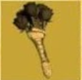

Llega el Parche de Inventario
Este nuevo parche llega a Fallout 76
para ayudar a organizar mejor nuestro
inventario entre
otras cosas.
A continuacion las novedades mas
importantes
Aumento del alijo, de 800 a 1200
Nuevas pestañas en el Pip-Boy,
ahora armaduras y atuendos están
por separado y comida y bebida
están separadas de ayuda, lo cual
agilizará mucho la busqueda de
nuestros objetos. Tambien se
incorpora la pestaña "nuevo" donde
encontraremos los ultimos items
recogidos en la sesion actual
ordenados en el orden en el que se
recogen
Nueva funcion "peso apilado" nos
muestra la el peso total de un item
que tengamos en cantidad (Tip:
atentos con los items de ayuda y
comida y bebida, que suelen ser los
que mas se acumulan sin darse
cuenta!)
Tambien encontraremos mejoras en
la interfaz de la vista en mapa de las
maquinas vendedoras de jugadores.
Ahora aparecen diferenciadas amas
y armaduras por cantidad de estrellas
legendarias, lo cual sin duda nos
ahorrará muchos viajes rápidos.
Operaciones Diarias
A partir de esta actualización al
completar una operación diaria
alcanzando el rango de "Maestre" se
garantizará la obtención de al menos
un objeto de entre las recompensas
poco comunes.
Conocimiento Prohibido
La conocida mision secundaria ha
sido reactivada luego de haber
solucionado los problemas con los
datos tecnicos. Y ahora no solo
pueden depositarse en Campamento
Aventura, tambien son recibidos en
Fuerte Atlas por la escriba Odessa
Valdez de la Hermandad del Acero, a
quien vemos en la siguiente imagen.
-------------------------------------------------------
Consejo diario: no olvides llevar
siempre un poco de Rad-X por si te
topas con una tormenta radiactiva ;-)
Novedades Tienda Atómica
En la tienda atómica se ha añadido
una opción para que muestre solo los
ítems que no hemos comprado, para
facilitar la navegación y mejorar la
visualización.
Esta semana encontraremos las
siguientes novedades:
Camara de Habitaciones de Refugio
1500 átomos
Servoarmadura de Ranger del Parque
1200 átomos
Además de muchas ofertas entre las
que destacan los letreros de
Quantum, Old Possum y Pickaxe,
Conjunto de bar elegante, Conjunto
de barra de Slocum's Joe, entre
otras.
-------------------------------------------------------
Evento por tiempo ilimitado!

No olvides reclamar
la skin gratuita del
"Rompecorazones"
oara ka Llave Grifa y
participar del Evento
"Muero de Amor".
donde deberás completar desafios
diarios y semanales que otorgarán
recompensas como tarteras, kits de
reparación, sobres de "perks", y
objetos de tiempo limitado (atuendo
de RobCo, Bungaló rústico y Casco
de pescador de langostas)